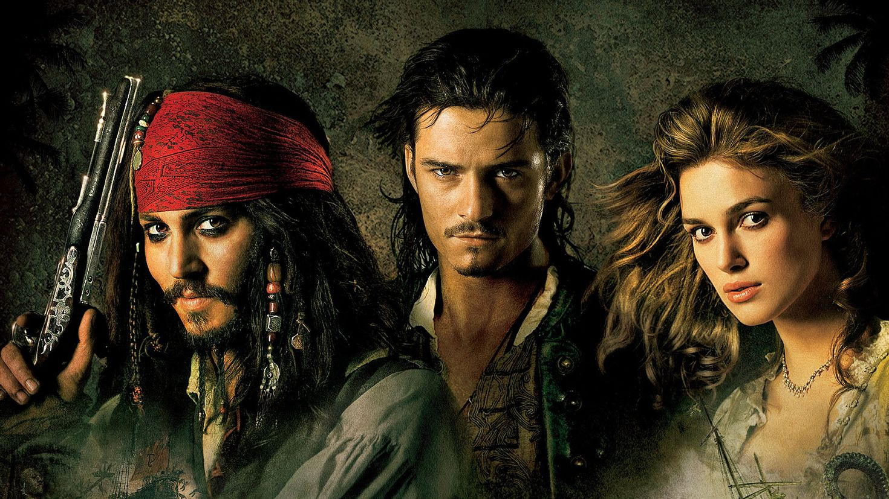

“Марсианин” - это основанный на реальных событиях научно-фантастический
приключенческий фильм 2015 года режиссера Ридли Скотта. В главной роли Мэтт Дэймон.
Фильм рассказывает об астронавте Марке Уотни, который из-за пыльной бури оказывается изолированным на Марсе, когда его команда в спешке покидает планету,
считая его погибшим.
Продолжительность фильма: 2 ч 31 мин
приключенческий фильм 2015 года режиссера Ридли Скотта. В главной роли Мэтт Дэймон.
Фильм рассказывает об астронавте Марке Уотни, который из-за пыльной бури оказывается изолированным на Марсе, когда его команда в спешке покидает планету,
считая его погибшим.
Продолжительность фильма: 2 ч 31 мин
Популярные фильмы
Рейтинг составлен на основе посещаемости страниц фильмов,
а также запросов к поисковой системе сайта.
Список обновляется один раз в сутки.
Все фильмы
Фильм “Брат” рассказывает историю о том, как Данила пытается восстановить справедливость в мире, где закон и мораль не всегда идут рука об руку. В процессе он сталкивается с различными персонажами, такими как проститутка, ветеран войны, музыкант и даже американский актер, каждый из которых вносит свой вклад в его моральное развитие.

“Аватар” - это научно-фантастический фильм 2009 года, снятый режиссером Джеймсом Кэмероном.
Действие происходит в 2154 году, где главный герой, Джейк Салли, парализованный солдат, подключается к телу своего аватара на планете Пандора.
Продолжительность фильма: 2 ч 42 мин
Действие происходит в 2154 году, где главный герой, Джейк Салли, парализованный солдат, подключается к телу своего аватара на планете Пандора.
Продолжительность фильма: 2 ч 42 мин

“Константин: Повелитель тьмы” - это американский фильм ужасов 2005 года, основанный на комиксах DC Comics о Джоне Константине, оккультном детективе и эксперте по сверхъестественному. Фильм был снят Фрэнсисом Лоуренсом с Киану Ривзом в главной роли.
Продолжительность фильма: 2 ч 2 мин
Продолжительность фильма: 2 ч 2 мин

“Джокер” - это психологический триллер 2019 года, основанный на комиксах DC.
.Фильм, снятый Тоддом Филлипсом, рассказывает историю Артура Флека, неудачливого комика, живущего в коррумпированном городе Готэм.
В результате различных трагических событий Флек превращается в злодея Джокера, одного из самых известных врагов Бэтмена.
Главную роль в фильме исполнил Хоакин Феникс. “Джокер” стал одним из самых успешных фильмов года, получив признание критиков и множество наград,
включая “Оскар” за лучшую картину.
Продолжительность фильма: 2 ч 2 мин
.Фильм, снятый Тоддом Филлипсом, рассказывает историю Артура Флека, неудачливого комика, живущего в коррумпированном городе Готэм.
В результате различных трагических событий Флек превращается в злодея Джокера, одного из самых известных врагов Бэтмена.
Главную роль в фильме исполнил Хоакин Феникс. “Джокер” стал одним из самых успешных фильмов года, получив признание критиков и множество наград,
включая “Оскар” за лучшую картину.
Продолжительность фильма: 2 ч 2 мин
Легенда №17 - это вдохновляющая спортивная драма 2012 года, основанная на реальной истории советского хоккеиста Валерия Харламова. Фильм рассказывает о его пути к славе и признанию, начиная от простого деревенского парня, мечтающего стать профессиональным хоккеистом, до звезды мирового хоккея.
Продолжительность фильма: 2 ч 2 мин
Продолжительность фильма: 2 ч 2 мин
“Доктор Стрэндж” - американский фильм о супергероях 2016 года, основанный на персонаже Marvel Comics с тем же именем. Режиссером фильма является Скотт Дерриксон, а главную роль исполняет Бенедикт Камбербэтч. Стрэндж - блестящий, но высокомерный хирург, который в результате автокатастрофы теряет возможность использовать свои руки. Он отправляется в путешествие по миру магии и колдовства, чтобы восстановить свое здоровье и стать защитником Земли от мистических угроз.
Продолжительность фильма: 2 ч 2 мин
Продолжительность фильма: 2 ч 2 мин
“Пираты Карибского моря: Сундук мертвеца” - это продолжение фильма “Пираты Карибского моря” 2003 года. Фильм вышел в 2006 году и был снят Гор Вербински. В фильме Джонни Депп возвращается в роли Джека Воробья, а также Орландо Блум и Кира Найтли. Сюжет продолжает приключения Джека Воробья и Уилла Тернера, которые должны найти ключ к сундуку мертвеца, чтобы освободить капитана Барбоссу из Дьявольского контракта.
Продолжительность фильма: 2 ч 2 мин

Продолжительность фильма: 2 ч 2 мин